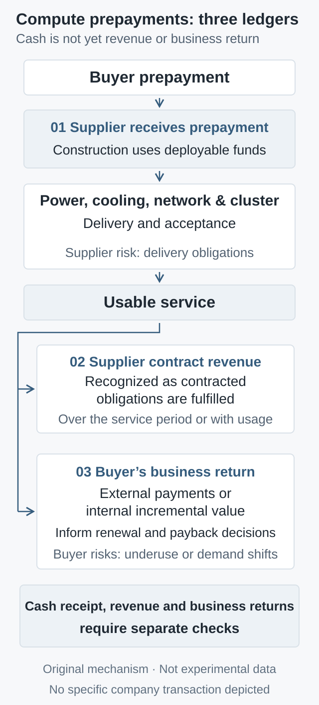

What compute prepayments change: Oracle, Tencent, and the cash timing of AI expansion
Prepayments can narrow construction funding gaps without automatically removing delivery or demand risk. Oracle and Tencent disclosures help separate cash, usable service, revenue, and end-use returns—and define what to test.
Compute prepayments can let a supplier start construction sooner and let a buyer secure an earlier delivery position. They first change the timing of cash; who ultimately bears risk still depends on the contract. In its October 1, 2026 article, NVIDIA identifies earning capacity, useful life, and demand as drivers of AI infrastructure returns. This is a supplier's commercial argument: throughput gains alone do not establish that demand will necessarily follow. A more concrete starting point is the different cash timing visible in recent Oracle and Tencent disclosures.
1. Separate four different moments
Contracting for compute, paying cash, obtaining usable service, and recovering the investment through a business can be far apart. A prepayment advances the cash event; it does not make the other events happen simultaneously. An expansion requires at least four distinct checks:
Moment
Evidence to examine
Cash payment
Receipt, use restrictions, refund and release conditions
Service availability
Power, clusters, and contracted workloads pass acceptance
Revenue recognition
Contract performance and applicable recognition method
End-use return
Sustained external payments or incremental internal business contribution
Revenue recognition and end-use returns need not coincide either. Oracle's September 11, 2026 quarterly filing distinguishes cloud contracts recognized over the service period from those recognized with usage. Providing contracted service availability can support recognition over time; consumption-based arrangements follow actual usage. “GPUs must be busy before there is revenue” is therefore too broad. Underuse can nevertheless weaken subsequent payment capacity, renewal incentives, and suppliers' long-term returns.
2. Two disclosures show different cash positions
For the quarter ended August 31, 2026, Oracle reported operating cash flow of US$23.103 billion, including a US$11.363 billion increase in deferred revenues from customer prepayments with a significant financing component. Cash capital expenditures were US$28.499 billion, and reported free cash flow was negative US$5.396 billion. These receipts support current funding but cannot all be treated as proceeds from services already performed. Remaining performance obligations, or RPO, extend across years and are not equivalent to cash already collected. The September 10 earnings release also reports US$7.4 billion in quarterly IaaS revenue and 850 MW of additional capacity delivered: there is actual delivery and revenue, not only future commitments.
Tencent's August 12, 2026 announcement reports negative RMB13.8 billion in free cash flow for the quarter ended June 30. The company says this would have been positive RMB37.6 billion excluding compute-procurement prepayments. This is the company's hypothetical adjustment, not cash flow already achieved or necessarily sustainable. The company describes procurement supporting internal models, applications, and inference as well as external cloud demand.
These cases cannot be assembled into a known bilateral transaction: the cited disclosures do not identify the two companies as the matching payer and recipient. Currencies, quarters, and business scope differ, as do free-cash-flow definitions—Tencent also deducts media-content and lease-liability payments. The comparison here concerns mechanisms, not a ranking of companies by two cash-flow figures. Nor should capital expenditures, procurement payments, and prepayments be added together and labeled installed compute capacity.
3. How usable prepayments reduce an initial funding gap
Start with the receiving supplier. Within the same initial cash window, let \(I_0\) be investment cash that must be paid, \(W_0\) other startup and operating cash needs, \(C_0\) deployable own cash, and \(A_0^{\mathrm{usable}}\) the new prepayment actually received and available for use. The remaining funding to arrange can be simplified as:
All variables use the same currency. \(I_0\) is not book capital expenditure; \(W_0\) neither duplicates investment payments nor already nets off customer advances; \(C_0\) excludes the new prepayment. Restricted deposits and escrow funds that have not met release conditions do not count as usable. Otherwise, the same cash can be counted twice.
Other things equal, more usable prepayment reduces additional financing while the gap remains positive. It may reduce borrowing pressure or bring forward a project otherwise delayed by inadequate funding. But this equation is a funding snapshot for a window, not a valuation or a guarantee of liquidity on every due date. If a customer pays at month-end and an equipment supplier requires payment at the start, bridging finance may still be needed.
The advance also comes with a future delivery obligation. Spending it on a facility does not automatically create additional profit. Some cash will no longer be collected during future service periods, while power, operations, and financing still require payment. Analysis must therefore retain both a construction funding schedule and a service-period cash schedule. Simply subtracting prepayments from current cash flow does not reconstruct the full business without them: construction speed and financing choices might also change.
4. Earlier cash and transferred demand risk are distinct
An unconditionally refundable advance is closer to a temporary funding arrangement. Staged escrow requires milestones before the supplier can use the funds. If a contract additionally contains a noncancelable minimum purchase commitment, the buyer may keep bearing capacity costs when demand disappoints. That contractual constraint transfers part of the demand risk; the word “prepayment” alone does not establish it.
The supplier does not escape risk. Construction delays, inadequate performance, compensation, and refunds may leave delivery obligations with it. Deteriorating customer credit during the service period can still impair collections. The buyer must examine supplier performance, recovery of cash after default, and migration options when new hardware or models arrive. Public financial statements are insufficient to establish Tencent's specific cancellation and refund provisions.
A sound transaction can benefit both parties: the supplier receives construction funding, while the buyer secures resources or pricing during scarcity. The question is whether that certainty justifies giving up liquidity and some flexibility to change technology. Staged payments, explicit acceptance, and alternative-delivery provisions are design options to evaluate individually; this article does not assume they exist in the companies' contracts.
This could also change competition, but the following is our inference. When resources are scarce and demand changes quickly, cash-rich buyers with more predictable workloads are better placed to exchange prepayment for supply certainty. Providers offering verifiable delivery and well-designed staged payments, capacity adjustments, or migration options may command a service premium. Customers with fragmented demand may instead pay for flexibility rather than simply seek the lowest price per accelerator. This does not assume that such terms already exist or that a premium has been demonstrated. If supply becomes abundant, or standardized migration materially reduces switching costs, these advantages from certainty and flexibility may weaken.

Original mechanism schematic, not transaction or experimental data. The roles do not represent a known Oracle–Tencent contract; service revenue recognition and the buyer's end-use return are evaluated separately.
5. Accept usable service, not just installed equipment
Funding resolves only some constraints. Tencent's August 17, 2026 technical disclosure describes the higher power-delivery, cooling, and system-design requirements of dense AI racks. It supports checking facility conditions, but provides no proof of capacity already online or in paid use.
A proposed acceptance process proceeds by layer: power connection and cooling under contracted load; network, cluster, and failure recovery; then time to first token, tail latency, and sustained throughput using the buyer's actual model, context lengths, concurrency, and quality threshold. Peak throughput on a smaller model is not a substitute for the sustained service needed by a production workload.
Acceptance should also specify test windows, injected failures and recovery objectives, measurement conventions, and remediation deadlines. Passing technical acceptance means the system can produce qualifying output. Whether anyone will pay for that output is a separate commercial test. Separating them helps locate a problem in delivery capability or insufficient demand.
6. The operating contribution break-even threshold
Consider a buyer that purchases capacity and resells services by usage. Holding quality, latency, and the task definition fixed, let \(q\) be qualifying tasks sold in a period, \(p\) realized revenue per task, \(v\) variable cost per task, \(L\) the period's capacity commitment cost, and \(F\) other fixed costs. Initially assume that unit price and variable cost do not change with volume. A simplified contribution model and the break-even volume for that period's operating contribution are:
The units of \(p,v\) are currency per task, while \(L,F,\Pi\) are monetary amounts for the same period. \(L\) is neither physical capacity nor the upfront cash advance. Costs already covered by the capacity fee must not also enter \(v\) or \(F\). The expression does not deduct prepayment again and omits full tax, financing, and capital-return requirements; it is not a forecast of company net income. Tiered pricing or different task mixes require disaggregation rather than adding noninterchangeable outputs.
If \(q^{\ast}>Q_{\max}\), where \(Q_{\max}\) is the period's deliverable task limit under the same service standard, selling all available output still cannot break even at those prices and costs. If \(p\le v\) with positive fixed costs, no positive output solves the problem. Efficiency may lower costs or raise deliverable capacity; if prices fall simultaneously and demand does not expand, returns need not improve. The claim that cheaper tokens necessarily produce demand growth exceeding efficiency gains remains a hypothesis to test.
Internal use cannot be forced into externally sold task volume. For a proprietary model or product, measure incremental business contribution, verifiable cost savings, and their timing, excluding growth that would have happened anyway. Internal transfer prices cannot manufacture group-level revenue. Tencent's combination of internal and external uses illustrates why a single GPU-utilization statistic cannot establish whether an investment is worthwhile.
7. What to examine over the next six to twenty-four months
Track the same contract or construction cohorts instead of replacing fulfillment evidence with ever more announcements. Public information may not expose every project detail, so the following are evidence to seek, not existing measurements of company utilization:
Delivery: time from promised milestones to acceptance, usable-service ramp, and remedies after delays.
Cash: drawdown of advances as services are delivered, subsequent customer payments, and financing needs; separate one-time receipts from repeatable customer cash flow.
Economics: realized prices, unit contribution, paid task volume, renewals, downsizing, and customer concentration at fixed quality and latency.
Internal value: whether incremental product contribution covers resources and operations, tested through staged investment or comparison designs.
Timely acceptance, stable unit contribution, continued renewals, and attributable internal benefits would support advance payment as a rational supply-security decision during scarcity. Widening delays, or persistently deteriorating unit contribution in mature delivered cohorts that require new prepayments to cover the costs of fulfilling existing contracts rather than funding new expansion, would warrant lower expectations for long-term returns. Price cuts can rationally improve utilization, and new expansion may need advance funding; neither is itself evidence of failure. Conversely, one quarter of negative free cash flow does not establish investment failure: construction preceding service naturally creates a timing gap.
The test is whether cash paid early buys deliverable service and sustainable business contribution, not simply a larger commitment total. This article has no access to undisclosed contracts and includes no measurement of either company's cluster utilization. Its equations and acceptance proposals are an analytical framework, not estimates of their actual returns.